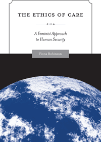

<body bgcolor="#FFFFFF" text="#000000" link="#0000FF" vlink="#CC0000" alink="#CC0000"><center><hr width="350" size="1" align="center" noshade>Applying feminist ethics to a comprehensive reworking of the theory of human security, addressing such issues as poverty, health, environment, conflict and peace building<hr width="350" size="1" align="center" noshade><p><a href="https://cdcshoppingcart.uchicago.edu/Cart/ChicagoBook.aspx?ISBN=9781439900659&&PRESS=temple" target="_top">Buy this book!</a> | <a href="https://cdcshoppingcart.uchicago.edu/Cart/Cart.aspx?PRESS=temple" target="_top">View Cart</a> | <a href="https://cdcshoppingcart.uchicago.edu/Cart/Cart.aspx?PRESS=temple" target="_top">Check Out</a></p><p></p></center><!--none//--><h1>The Ethics of Care</h1>
<H2>A Feminist Approach to Human Security</H2>
<h3>Fiona Robinson</h3>
<P>cloth 1-43990-065-5 $75.50, Sep 11, <FONT COLOR=#990033>Available</FONT>
<br>paper 1-43990-066-3 $26.95, Sep 11, <FONT COLOR=#990033>Available</FONT>
<br>Electronic Book 1-43990-067-1 $26.95 <FONT COLOR=#990033>Available</FONT>
<BR> 200 pp
5.5x8.25
</P><h3 align="center"><P><font color="#996633">J. Ann Tickner Book Prize from the International Studies Association,
2014</font></P>
</H3>
<BLOCKQUOTE><I>"This is the best book on the implications of the ethics of care for global politics. In combining human security with a relational approach to care ethics, Robinson has written an essential contribution both to the fields of international relations and global ethics."</I>
<br>&#151<b>Joan C. Tronto</b>, University of Minnesota <I></I></BLOCKQUOTE>
<p>In <i>The Ethics of Care</i>, Fiona Robinson demonstrates how the responsibilities of sustaining life are central to the struggle for basic human security. She takes a unique approach, using a feminist lens to challenge gender biases in rights-based, individualist approaches.Robinson's thorough and impassioned consideration of care in both ethical and practical terms provides a starting point for understanding and addressing the material, emotional and psychological conditions that create insecurity for people. <i>The Ethics of Care</i> examines “care ethics” and “security” at the theoretical level and explores the practical implications of care relations for security in a variety of contexts: women's labor in the global economy, humanitarian intervention and peace building, healthcare, and childcare.
<p>Theoretically-innovative and policy-relevant, this critical analysis demonstrates the need to understand the obstacles and inequalities that obstruct the equitable and adequate delivery of care around the world.
<BR>&nbsp;<h2>Excerpt</h2><P>Excerpt available at <a href="http://www.temple.edu/tempress">www.temple.edu/tempress</a></p>
<BR>&nbsp;<h2>Reviews</h2>
<p><I>"Anyone who is interested in understanding human security, gender, and their relationship will benefit from reading </I>The Ethics of Care<I>–its feminist approach to human security is theoretically sophisticated, innovative, and robust. This book’s theoretical contribution is second only to its indispensability to understanding policy in a number of key areas–including sex economies, humanitarian intervention, peacebuilding, health, and the environment. It is a must read!"</I><br>&#151<b>Laura Sjoberg</b>, University of Florida
<p><I>"Robinson’s book is an important contribution to the literatures on human security on the one hand, and the feminist ethic of care on the other. The key strength of </I>The Ethics of Care<I> is the way that it demonstrates in detail the implications of a care approach for human security thinking across a range of domains. It is highly theoretically sophisticated in its account of care ethics, but also has the strong advantage of fleshing its consequences out in relation to empirical contexts and issues."</I><br>&#151<b>Kimberly Hutchings</b>, London School of Economics and Political Science
<p><i>"[Robinson's] argument is unique and far-reaching and will have significant ramifications in the international relations literature. Highly Recommended."</i> <br>&#151<b><i>CHOICE</i></b>
<p><i>"Robinson provides important contributions to the literature on human security and the feminist ethic of health care.... Her theoretically sophisticated approach provides a new lens to view perennial issues of security."</i> <br>&#151<b><i>The Journal of Family and Consumer Sciences</i></b>
<BR>&nbsp;<h2>Contents</h2><P>
<p>Acknowledgments
<br>Introduction
<br>1. The Ethics of Care and Global Politics
<br>2. Rethinking Human Security
<br>3. “Women’s Work”: The Global Care and Sex Economies
<br>4. Humanitarian Intervention and Global Security Governance
<br>5. Peacebuilding and Paternalism: Reading Care through Postcolonialism
<br>6. Health and Human Security: Gender, Care, and HIV/AIDs
<br>7. Gender, Care, and the Ethics of Environmental Security
<br>Conclusion: Security through Care
<br>References
<br>Index</p>
</P><BR>&nbsp;<H2>About the Author(s)</H2>
<P><b>Fiona Robinson</b> is an Associate Professor in the Department of Political Science at Carleton University. She is the author of <i>Globalizing Care: Ethics, Feminist Theory</i> and <i>International Relations</i>, and numerous journal articles on ethics, gender, and human rights in world politics.</P>
<BR><H2>Subject Categories</H2>
<p><A HREF="/tempress/philosophy.html" TARGET="_top">Philosophy and Ethics</a>
<BR><A HREF="/tempress/women.html" TARGET="_top">Women's Studies</a>
<BR><A HREF="/tempress/political.html" TARGET="_top">Political Science and Public Policy</a>
</p>
<BR><h2 class="inpageheading">In the series</H2>
<P><I><a href="http://www.temple.edu/tempress/gep.html" onMouseOver="window.status='Click for other books in this series!'; return true;" onMouseOut="window.status=''; return true;" target="_top">Global Ethics and Politics</a></i>, edited by Carol C. Gould.
</p><p>Global ethics and international political theory are relatively new fields prompted by the growing interconnections of economies, technologies, societies, cultures, and legal systems that together comprise globalization. The <i>Global Ethics and Politics Series</i>, edited by Carol C. Gould, will feature original authored works and distinctive collections dealing with the contemporary ethical issues that are raised by globalization and by the new democratic forms of global governance that can contribute to the realization of justice and human rights. It will also consider new cross-cultural approaches to ethics and political norms and the conditions for intercultural understanding and conflict resolution in a globalizing world. Within these parameters, the series will include books on such themes as ethical issues regarding globalization; cross-cultural approaches to ethics and human rights; new perspectives on transnational democracy and the use of global governance institutions and international law to address questions of global justice and questions of war and peace.</p>
<p align="center"><a href="https://cdcshoppingcart.uchicago.edu/Cart/ChicagoBook.aspx?ISBN=9781439900659&&PRESS=temple" target="_top">Buy this book!</a> | <a href="https://cdcshoppingcart.uchicago.edu/Cart/Cart.aspx?PRESS=temple" target="_top">View Cart</a> | <a href="https://cdcshoppingcart.uchicago.edu/Cart/Cart.aspx?PRESS=temple" target="_top">Check Out</a></p><p><font face="Arial" size="1"><a href="copyright.html" onMouseOver="window.status='Web Copyright Policy';return true;" onMouseOut="window.status=''" title="Web Copyright Policy">&copy;</a> 2015 <a href="http://www.temple.edu" target="new" onMouseOver="window.status='Link to Temple University home page';return true;" onMouseOut="window.status=''" title="Link to Temple University home page">Temple University</a>. All Rights Reserved. http://www.temple.edu/tempress/titles/2048_reg.html</font></p>